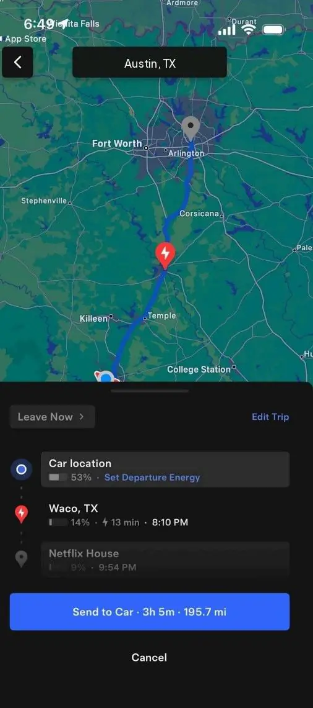
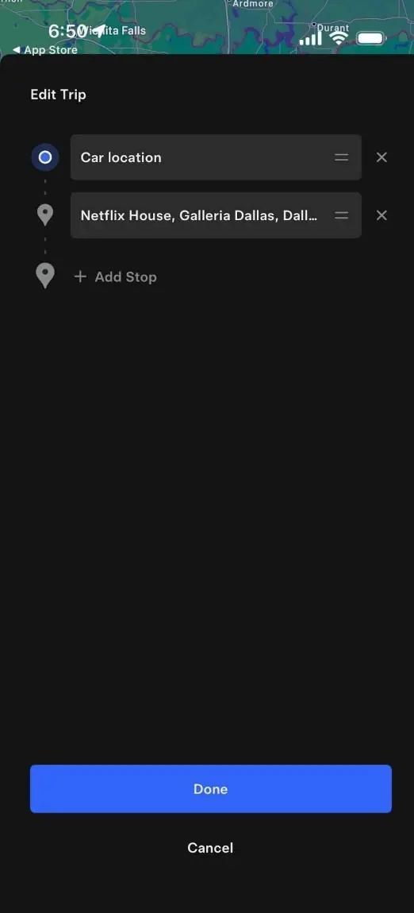
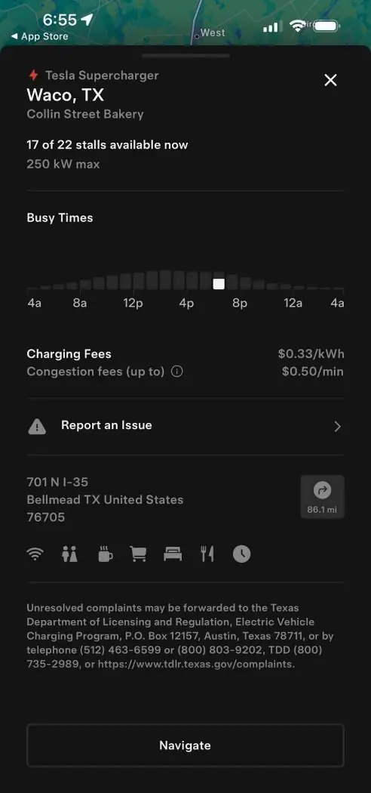

01Trip summaryRoute created
Confident
The app found a stop.
- action
- A Waco Supercharger appears on the route.
- problem
- The route view omits restroom and dining details.
- ux move
- Surface amenities with the suggested stop.
ASU grad project / Spring 2026
Three walls between Sarah and Dallas.
A 195-mile drive, one charging stop, and an app that already held every answer — spread across three screens that never passed it on.
The project in 60 seconds
Start here for the challenge and the thinking behind my work. Explore the deeper process and actual project evidence below.
01 / The problem
Trip planning, charging stops, and station amenities were separated, forcing drivers to remember details across screens.
02 / Designed for
Tesla drivers planning longer EV trips; the scenario follows an Austin-to-Dallas journey.
03 / My role
Researcher and concept designer responsible for study, journey map, and proposed interaction improvements.
How evidence became a design decision
Usability-tested the current app with two Tesla owners and synthesized a proto-persona from driver interviews.
Tesla already offered amenity filters. The missing connection was between that capability and the trip-planning flow.
Bring amenity selection into the trip and carry route context forward to charging-stop details.
Produced a research-informed journey map and design proposal. The proposed redesign has not been usability-tested.
Why this decision?Recognition replaces recall, allowing drivers to check amenities without restarting the plan.

Graduate research · concept redesign, not a shipped Tesla feature.
Planning a longer EV road trip involves more than choosing a destination. Drivers consider charging locations, travel time, and nearby amenities. I began with a proto-persona drawn from my own Tesla driving experience, then gathered participant feedback about road-trip planning. Combining their input with an app review helped me develop a more grounded journey map.
For this project I used two methods from Leah Buley's The User Experience Team of One: Method 9, proto-personas, to frame early assumptions, and Method 25, mini case studies, to explain a focused UX problem. I used participant feedback to check those assumptions before proposing changes. This showed me how to make progress when research time is limited without mistaking a first draft for a verified finding.
Sarah began as a proto-persona based on my experience as a Tesla driver. Buley describes a persona as “a composite picture of a collection of users boiled down into one relatable human profile.” I then gathered feedback from two friends who own Teslas to better understand their trip-planning needs and frustrations. Their feedback helped me refine my initial assumptions.
I used one consistent scenario: plan a 195-mile trip from Austin to Netflix House Dallas, find a charging stop with restrooms and dining, and check the trip time without losing the route. This gave me a way to organize participant feedback and compare it with the existing screens.
She wants to check whether a charging stop has restrooms and dining without losing her planned route.
Every answer Sarah needed was already in the app. None of it was in the same place at the same time. Each of these three screens does its own job well and hands nothing to the next one — the wall is the gap between them.
Confident
The app found a stop.

Uncertain
Where can I filter stops?

Frustrated
Why leave my trip to check?
I developed a five-phase journey map with 23 actions using the Nielsen Norman Group framework for actions, thoughts, emotions, pain points, and opportunities. I combined participant feedback about road-trip planning and feelings with a review of Tesla's existing screens.
Participant feedback helped me refine Sarah's early goals and the emotional arc of planning a longer trip. I used the map to show where checking amenities could interrupt the route-planning flow, then reviewed the actual screens to locate the disconnect.
Sarah, a Model Y owner. Austin, TX to Netflix House Dallas (13550 Dallas Pkwy), about 195 miles. Plan the trip, find a Supercharger with a restroom and a restaurant along the route, and confirm the total trip time including the charging stop.
Five phases, 23 actions. Scroll sideways to follow the whole trip.
Confident
Perfect, I'm ready to plan my trip to Netflix House. This should be straightforward.
Uncertain
Wait, where's the filter button? How do I filter from the Location screen?
Annoyed
I have to memorise the station name and leave this screen just to check amenities? Seriously?
Frustrated
Are you kidding me? I lost everything. Now I have to start all over again.
Flat
Okay. My research is done.
At first I thought Tesla had no amenity filter. Rechecking the app showed that filters for restrooms, restaurants, and other amenities already existed in Charging. This shifted my recommendation from adding a feature to connecting existing ones.
This shared design direction helps stakeholders, developers, and product managers align on what to build and why: keep charging-stop choices and amenities in one continuous planning flow.
Next validation — test amenity filtering, inline station details, and route retention with Tesla drivers before treating the scenario as a confirmed usability issue.
Nielsen's recognition-rather-than-recall heuristic is the principle behind the recommendation, and it is measurable: if the planner stops asking the driver to hold details in their head, the work of planning a stop should get shorter and the route should stop being rebuilt. These are the measures I would put against the redesign.
None of them are results. This study was a proto-persona, a journey map and a screen review — it was never put in front of users, so the first column is counted from the mapped path and the second is a target, not a finding.
Minutes to confirm a charging stop with restrooms and dining and keep the planned route. The headline measure, and the one that needs real drivers before it means anything.
Counted from the journey map. Fewer actions is the proxy for recognition over recall while a time-on-task study is out of reach.
Trip summary, Edit Trip, and the Charging tab. The North Star is one.
Checking amenities costs the planned route. The target is zero.
A first run would need five to eight Tesla drivers on the same Austin-to-Dallas scenario, half on the current app and half on a prototype, with time on task and route rebuilds recorded per session.
I started with my own driving experience and refined Sarah's goals and frustrations using participant feedback, ensuring assumptions were distinguished from research findings.
I combined participants' road-trip concerns and emotions with an analysis of Tesla's app across five phases, highlighting gaps between trip planning and Charging.
During a second review I discovered a filter I had initially overlooked. Rather than proposing an unnecessary new feature, I focused on better connecting existing functionality.
Nielsen's recognition-rather-than-recall heuristic helped me understand why drivers should not have to remember charging station amenities when moving between screens. Tesler's Law also showed how a disconnected interface can make trip planning more complicated for users. Both principles guided my proposed design improvements.
This project showed me how a proto-persona can help frame a UX problem quickly when a timeline is tight. Sarah gave me a starting point, but participant feedback helped me question and refine those assumptions. Bringing their reported concerns and feelings into the journey map made it more grounded than a scenario based only on my own experience.
The other important lesson came from checking the interface again: Tesla already had an amenity filter I had overlooked. That shifted my proposal from adding a feature to connecting existing ones. Participant feedback informed the journey map, but the proposed redesign still needs usability testing before implementation.
Every step of one real trip, logged in order.
The stages where the driver's goal actually changed.
Each held part of the answer. None passed it on.
Beautifully designed and organized: may I keep it as a sample study?
Instructor · ASU grad project